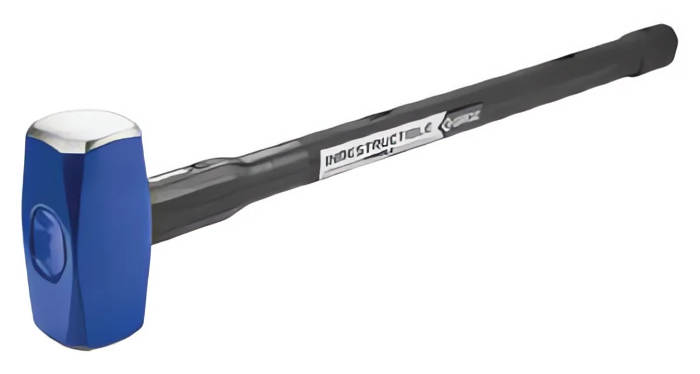

GROZ · Striking Tools
Sledge Hammers - DIN 6475 Indestructible Handle
CAT NR SHID/DIN/5K/30 · ORD NR 34721
| CAT NR (catalogue number) | SHID/DIN/5K/30 |
|---|---|
| ORD NR (order number) | 34721 |
| Box quantity | 4 |
| Handle length L1 (inch) | 30 |
| Handle length L1 (mm) | 750 |
| Handle length L2 (inch) | 28 |
| Handle length L2 (mm) | 700 |
| Head weight (gms) | 5000 |
| Head weight (kg) | 5 |
Ask for a quote The catalogue PDF, page 12
“Ask for a quote” opens this product in the catalogue: add it to your quote and send it. Buyers from Africa, the Gulf and worldwide are welcome; prices in USD, EUR or INR.
From the GROZ Workshop Tools CB-05 catalogue. Not yet verified: these details were read from the printed catalogue automatically; check the catalogue page before ordering.